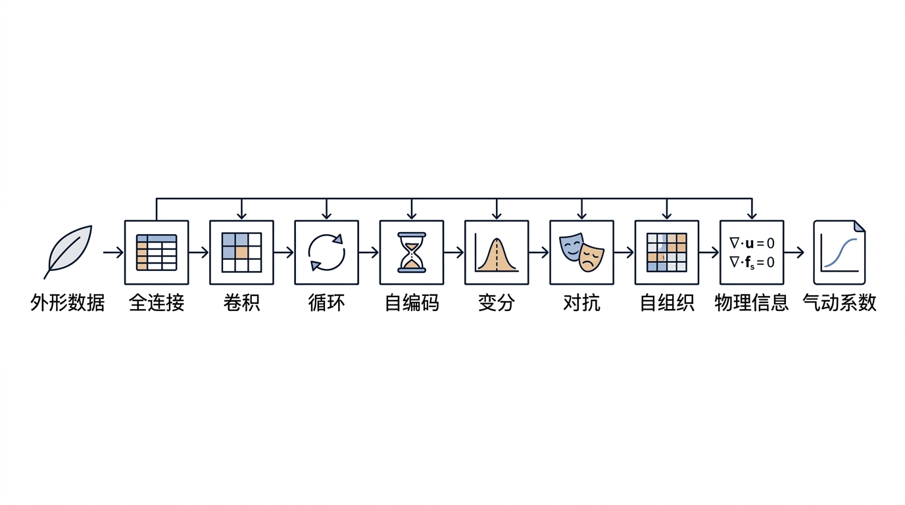
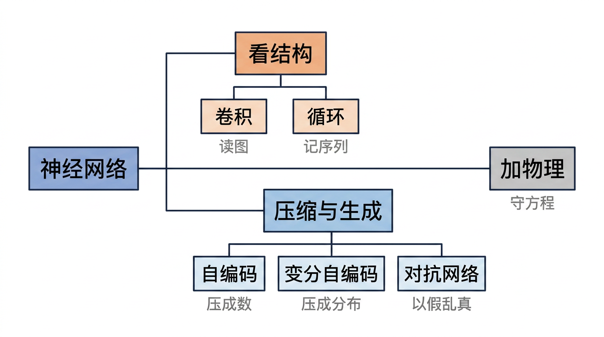
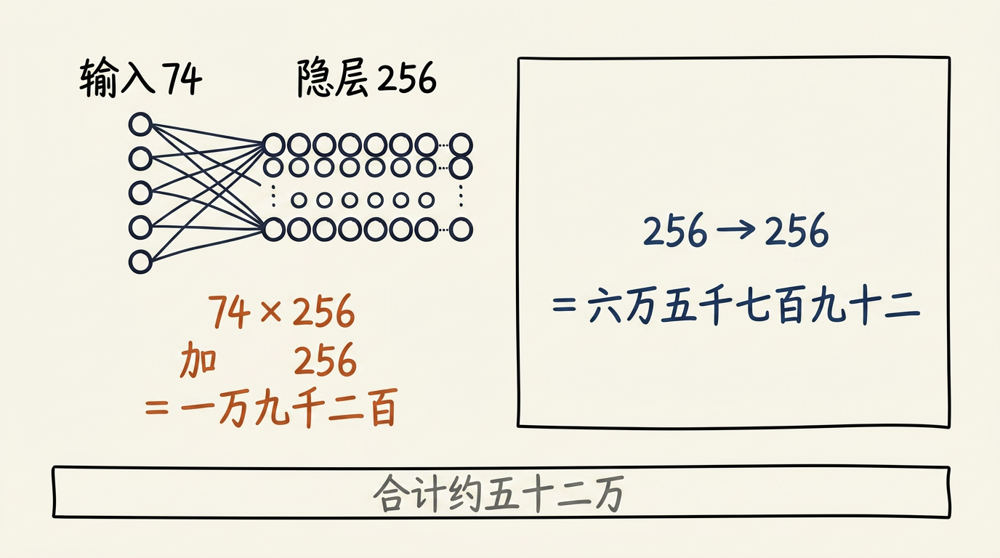
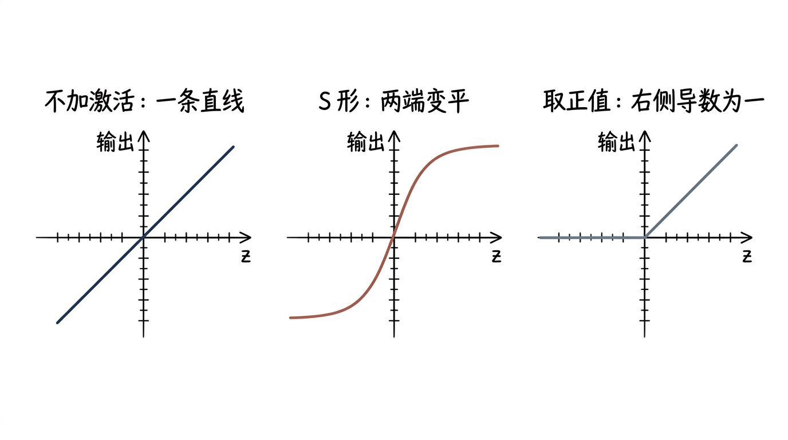
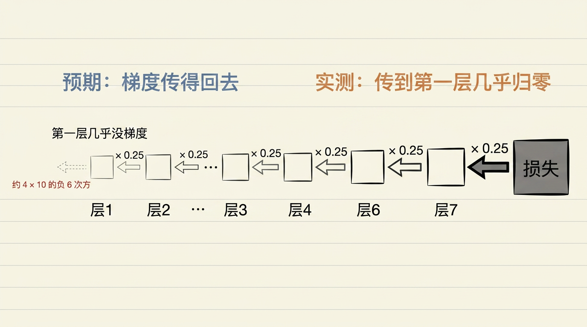
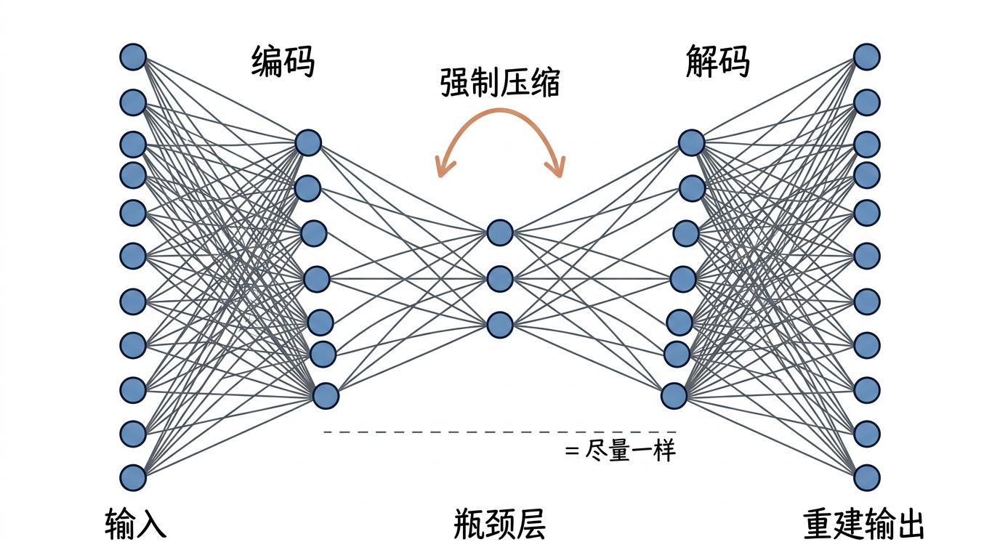
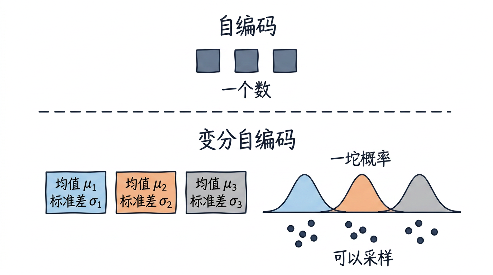
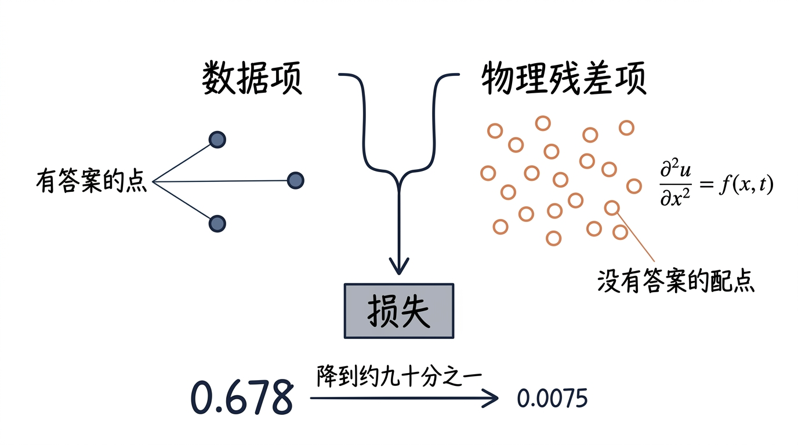
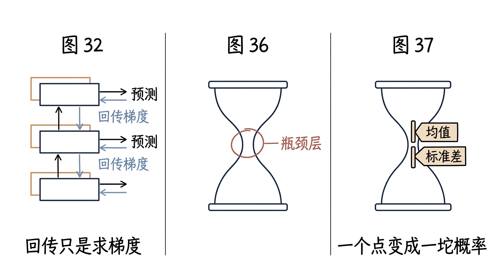
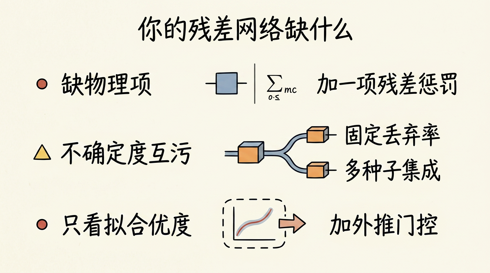

画风基准：第零章 ch0v2_s3_two_routes_zh.png 与 ch0v2_s3_blind_search_timeline_zh.png。
判定：中文有没有糊、一图是否只讲一义、有没有混入装饰性 Emoji、和基准画风是否一致。
 §3 引子 s1一件外形数据走过八个工位，最后吐出气动系数 |
 §3 家族树 s2一根主干分出“看结构”与“压缩生成”两支，另有“加物理”侧枝 |
 §5(a) s3参数量算账：74×256+256 与 256²+256 |
 §5(c) s3三种激活：直线、S 形、取正值 |
 §5(c) 打脸 s3梯度消失链：每回传一层乘 0.25（须含“预期/实测”字样） |
 §5(d) s3沙漏形结构：编码压到瓶颈层，解码再还原（对照 Fig.36） |
 §5(d) s3自编码瓶颈是一个点，变分自编码的瓶颈是均值与标准差（对照 Fig.37） |
 §5(e) s3损失两项：有答案的数据项 + 没有答案的配点残差项 |
 §7 s7三张图读法：回传只是求梯度、瓶颈层、一个点变一坨概率 |
 §10 s10三行诊断：缺物理项、不确定度互污、只看拟合优度 |